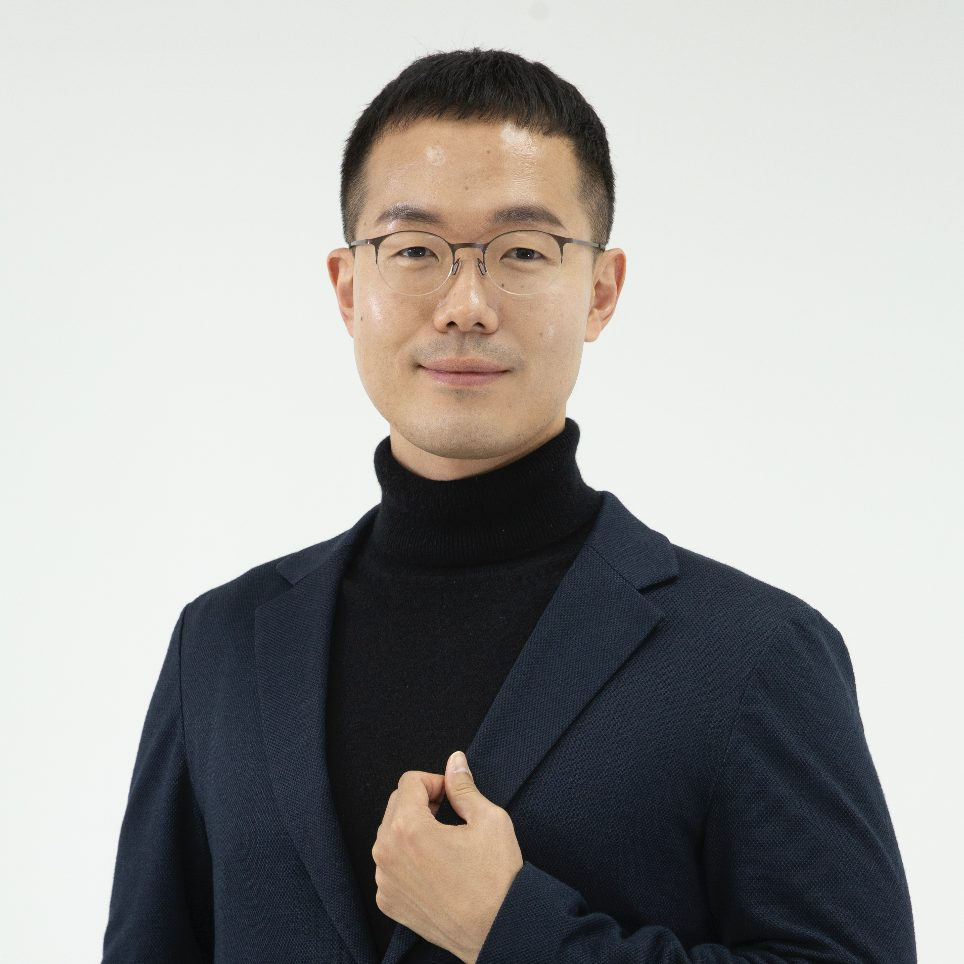

Kyoungwon Seo 서경원
Associate Professor
Dept. of Applied AI, Seoul National University of Science and Technology
Research Human-Computer Interaction, Deep Learning, Augmented/Virtual Reality
Education 2
- 2014.03. ~ 2018.08., Ph.D. in Industrial Engineering, Hanyang University
- 2006.02. ~ 2014.02., B.S. in Industrial Engineering, Hanyang University
Careers 10
- 2024.07. ~ current, Outside director, LetinAR (Korea)
- 2024.01. ~ current, Committee, Seoul Metropolitan Office of Education, Information Policy Review Committee (Korea)
- 2023.03. ~ current, Committee, Ministry of Science and ICT, Digital Society (Korea)
- 2025.10. ~ current, Associate Professor, Dept. of Applied AI, Seoul National University of Science and Technology (Korea)
- 2020.09. ~ 2025.09., Assistant Professor, Dept. of Applied AI, Seoul National University of Science and Technology (Korea)
- 2022.01. ~ 2023.12., Vice Provost, Office of International Affairs, Seoul National University of Science and Technology (Korea)
- 2018.08. ~ 2020.08., Postdoctoral Research Fellow, The University of British Columbia (Canada)
- 2018.06., Organizing Committee, ACM TVX
- 2016, Visiting Researcher, University of Sussex (UK)
- 2013, Visiting Researcher, Arts et Métiers ParisTech (France)
Professional Activities 8
- Associate Chair, ACM International Conference on Interactive Media Experiences (IMX)
- Reviewer, Computers & Education
- Reviewer, International Journal of Educational Technologies in Higher Education
- Reviewer, IEEE Transactions on Learning Technologies
- Reviewer, Instructional Design
- Reviewer, Psychological Reports
- Reviewer, Learning and Instruction
- Reviewer, ACM International Conference on Human Factors in Computing Systems (CHI)
Grants 23
- 2026.07. ~ 2027.03., Co-Investigator, Public–Private Joint Tech Commercialization R&D (KRW 100 million), Expert-Context Multi-Agent AI for Digital Accessibility [Ongoing]
- 2026.06. ~ 2026.12., Principal Investigator, RISE Program (KRW 60 million), SeoulTech — VLA Agent AI for User Behavior-Driven UI/UX Evaluation [Ongoing]
- 2026.06. ~ 2026.12., Principal Investigator, Industry Grant (KRW 80 million), i-SENS — AI Agent for Measurement Data Quality Management [Ongoing]
- 2026.04. ~ 2028.12., Principal Investigator, Computing-Intensive AI Application Technology Development (KRW 6 billion), IITP, Ministry of Science and ICT [Ongoing]
- 2026.03. ~ 2026.08., Principal Investigator, Private Company Grant (KRW 30 million), TutorusLabs — Usability Evaluation of an AI Tutoring System [Ongoing]
- 2025.09. ~ 2026.08., Principal Investigator, Research Grant (KRW 100 million), National Research Foundation of Korea — GUI Agent for UX Accessibility Evaluation [Ongoing]
- 2025.04. ~ 2027.12., On-Device AI-Based Self-Guided Hemorrhage Management System for Vascular Intervention using Vascular Image Data (KRW 3.03 billion), Ministry of Trade, Industry and Energy [Ongoing]
- 2024.12. ~ 2025.06., Visualization of Digital Twin Pilot Model and Synthetic Data Collection Services (KRW 90 million), KITECH [Completed]
- 2023.07. ~ 2025.12., Principal Investigator, International Joint Research Grant (KRW 1 billion), IITP [Completed]
- 2024.04. ~ 2024.09., Principal Investigator, Private Company Grant (KRW 33 million), ONCLEV [Completed]
- 2024.04. ~ 2024.09., Principal Investigator, Private Company Grant (KRW 33 million), ONCLEV [Completed]
- 2021.03. ~ 2024.02., Principal Investigator, Excellent Research Grant (KRW 550 million), Ministry of Science and ICT [Completed]
- 2021.06. ~ 2024.02., Co-Investigator, Basic Research Laboratory Grant (KRW 1.2 billion), Ministry of Science and ICT [Completed]
- 2023.06. ~ 2023.12., Principal Investigator, Private Company Grant (KRW 33 million), SUNGHA [Completed]
- 2023.06. ~ 2023.12., Principal Investigator, Industry-University Joint Research & Development Grant (KRW 48 million), LINC 3.0 [Completed]
- 2023.06. ~ 2023.11., Principal Investigator, AI-based Education Research Grant (KRW 33 million), Seoul Metropolitan Office of Education [Completed]
- 2022.05. ~ 2022.10., Principal Investigator, AI-based Education Research Grant (KRW 50 million), Seoul Metropolitan Office of Education [Completed]
- 2021.08. ~ 2022.07., Principal Investigator, University International Research Grant (KRW 6 million), SeoulTech [Completed]
- 2021.08. ~ 2022.07., Principal Investigator, University Research Grant (KRW 6 million), SeoulTech [Completed]
- 2021.06. ~ 2021.12., Co-Investigator, Arts & Technology Grant (KRW 50 million), Arts Council Korea [Completed]
- 2021.01. ~ 2021.04., Co-Investigator, Art & Technology Grant (KRW 50 million), Seoul Arts Center [Completed]
- 2020.11. ~ 2021.10., Principal Investigator, New Faculty Start-up Grant (KRW 10 million), SeoulTech [Completed]
- 2019.09. ~ 2020.08., Principal Investigator, 4th Industrial Revolution PostDoc Fellowship (KRW 50 million), Ministry of Science and ICT [Completed]
Awards 7
- 2026.01., 2025 SEOULTECH Faculty Research Award, Seoul National University of Science and Technology
- 2024.08., High Impact Paper Award, International Journal of Educational Technology in Higher Education (SSCI, Top 1%)
- 2023.11., Commendation by the Minister of Trade, Industry and Energy
- 2022.11., Outstanding Presentation Award, Fall Conference of the Korean Neurological Association
- 2016, Visiting Research Fellowship (University of Sussex, UK), National Research Foundation of Korea
- 2014, Research Competition First-Place Award, ACM CHI (International CS top conference)
- 2013, Visiting Research Fellowship (Arts et Métiers ParisTech, France), National Research Foundation of Korea
Patents 10
- 2026, Eye tracking data calibration method and eye tracking data calibration system
- 2025, METHOD FOR DIAGNOSING COGNITIVE IMPAIRMENT AND PREDICTING PROGNOSIS OF COGNITIVE IMPAIRMENT
- 2025, Method And Apparatus Of Academic Stress Assessment Using The Self-Disclosure Chat-Bot
- 2025, SERVER FOR MULTIMODAL-BASED PREDICTION MODEL EARLY DETECTION OF INVESTMENT CAUTIONARY STOCK AND METHOD OPERATION THEREOF
- 2023, System for early diagnosis of dementia and Method for early diagnosis of dementia using the same
- 2020, Engagement guarantee system using a gamification method (US)
- 2018, ENGAGING GUARANTEE SYSTEM USING GAMIFICATIONB METHOD
- 2018, MCI Screening System using Behavior Data from Immersive VR Platform and its related Method
- 2015, Method for Measurement Band Wagon Effect using Serious Game
- 2015, Method and Apparatus for Matching of Persuasive Factor based on Motivation
Teaching Courses 7
- Human-Computer Interaction (undergrad, grad): 2023, 2022
- Special Lecture Series on Artificial Intelligence (grad): 2022
- Deep Learning (undergrad): 2022
- Introduction to Artificial Intelligence (undergrad): 2021
- Object-Oriented Programming (undergrad): 2021
- Probability and Statistics (undergrad): 2023, 2021
- Mathematics for Artificial Intelligence (undergrad): 2020, 2022
Talks 22
- 2025.11., Keynote Speaker, SMART Family-Link Project, Hong Kong (Title: Empowering Families with Dementia — Early Diagnosis and Prognosis through the VEEM Digital Biomarker)
- 2024.02., Speaker, National Strategy Colloquium, National Assembly Library of Korea (Title: AI and Public Education)
- 2023.06., Keynote Speaker, Institute for Higher Education (Title: Direction of Teaching and Learning Support in the Age of Generative AI)
- 2023.05., Speaker, Inclusive Design and Accessibility Seminar (Title: Measuring and Preventing Kiosk Users' Technostress using AI in Virtual Reality)
- 2023.05., Speaker, Education Commission Asia Lecture (Title: High Touch High Tech for AI in Education)
- 2023.05., Speaker, Nowon-gu Office University Student Special Lecture (Title: What is the Rest in the Age of Artificial Intelligence?)
- 2023.05., Speaker, Daejin Girls' High School Special Lecture (Title: Who are you Artificial Intelligence?)
- 2023.05., Panel, Korean Neurological Association Smart Healthcare Forum (Title: Human-AI Partnership for Smart Healthcare)
- 2023.04., Panel, IITP Future Education Policy Meeting (Title: AI-based Customized Education Service)
- 2023.03., Speaker, Digital Society EduTech Forum (Title: AI-based Customized Education Service)
- 2023.02., Speaker, Education Commission Asia Lecture (Title: High Touch High Tech for AI in Education)
- 2023.01., Speaker, University of Seoul Engineering Education Innovation Center Workshop (Title: Human-AI Interaction for Engineering Education)
- 2022.12., Keynote Speaker, The 8th Annual Conference of Vietnamese Young Scientist (Title: Human-AI Interaction Design for a Human-centered Future)
- 2022.12., Panel, Korea Research Institute for Vocational Education & Training (Title: The Impact of AI on Work)
- 2022.11., Speaker, UST Angelicum College (Title: Building a Sustainable Future Through Innovative Technologies)
- 2022.10., Speaker, Nowon Career Center for Youth and Future (Title: Special Lecture on Metaverse)
- 2022.05., Speaker, Seoul National University (Title: For a Successful Human-AI Interaction Design)
- 2022.03., Speaker, Hanyang University CSE Convergence Seminar (Title: What's Wrong with Human-AI Interaction?)
- 2021.06., Speaker, Inha University (Title: AI in Education)
- 2021.06., Speaker, Korean Research Institute for Learning Analytics (Title: Artificial Intelligence for Video-based Learning at Scale)
- 2021.02., Speaker, Hanyang University (Title: Designing Human-AI Interaction for Healthcare, Manufacturing, and Education)
- 2020.11., Speaker, University of Seoul (Title: Human-AI Interaction)
News 5
- 2026.01. (SBS Biz 「용감한 토크쇼 직설」) CES 2026 이 보여 준 AI 기술 변화와 산업적 의미
- 2024.02. (국회도서관 웹진) 국회도서관, 2024년도 제1차 「국가전략 콜로키움」 개최
- 2022.10. (에듀프레스) 서울시내 교사 53% "서울형 에듀테크 플랫폼 한 번도 활용한 적 없다"
- 2021.11. (인공지능신문) 과기정통부, 인공지능 개발안내서·윤리 자율점검표·윤리 교육 총론 의견 수렴 공개 세미나
- 2021.11. (디지털데일리) 추상적 AI개발 원칙 구체화…인공지능 개발 가이드북 방향성 주목